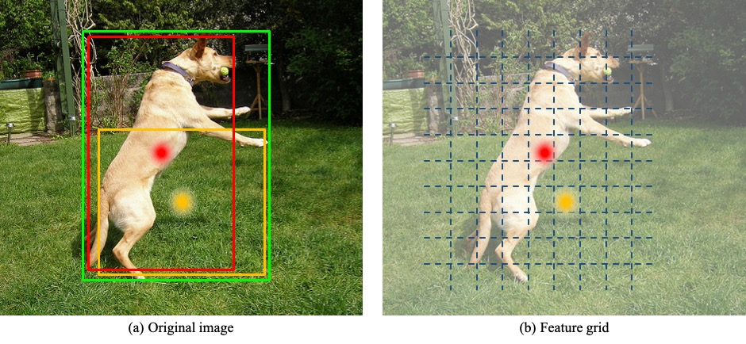
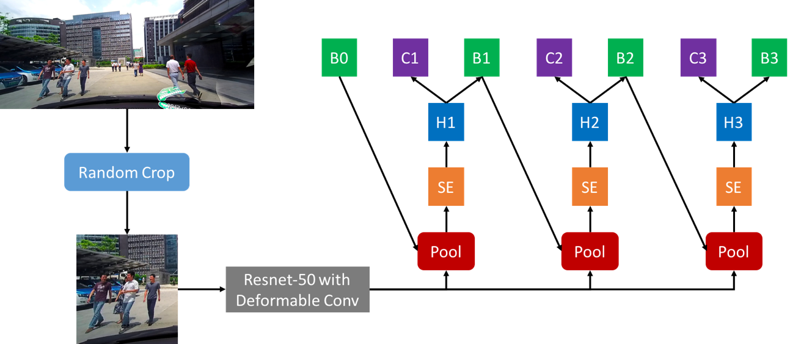

Biography
I am a third-year master student from Institute of Computing Technology,
Chinese Academy of Sciences under the
supervision of Prof. Hong Chang. My
research work centered around the task of object detection such as general
detection and human detection in the past two years. Before that, I obtained my bachelor degree from the
Department of Computer Science, Xidian University.
Education
-
-
Institute of Computing Technology, Chinese Academy of Sciences
-
August 2017 - Now
-
Master in Computer Science
-
-
Xidian University
-
August 2013 - July 2017
-
Bachelor in Computer Science
-
GPA 3.8, Rank 1/40 in Computer Vision
Publications
-

-
Cascade RetinaNet: Maintaining Consistency for Single-Stage Object Detection
-
Hongkai Zhang, Hong Chang, Bingpeng Ma, Shiguang Shan, Xilin Chen
-
British Machine Vision Conference (BMVC), 2019.
-
[arXiv]
[BMVC version]
[Poster]
-

-
WIDER Face and Pedestrian Challenge 2018: Methods and Results
-
Chen Change Loy, et al.
-
Tech report, arXiv, 2019. Winner of pedestrian detection track.
-
[arXiv]
[Poster]
Experience
-
-
Tusimple, Beijing, China
-
June 2017 - August 2017
-
Advisor: Naiyan Wang
-
Topic: Object Detection
Awards
-
No.1 of WIDER Face and Pedestrian Challenge 2019 on the
pedestrian detection track, ICCV2019
-
Outstanding Individual Award, Institute of Digital Media
(NELVT), Peking University, 2019
-
No.1 of WIDER Face and Pedestrian Challenge 2018 on the
pedestrian detection track, ECCV2018
-
First-class Academic Scholarship, University of Chinese Academy of Sciences, 2018
-
National Scholarship, Ministry of Education of P.R. China, 2016
-
First-class Scholarship, Xidian University, 2015